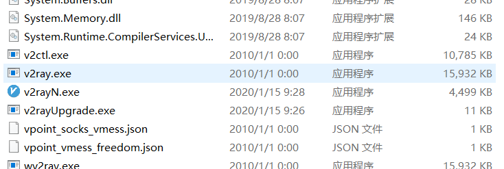
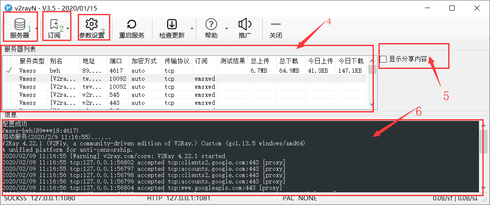
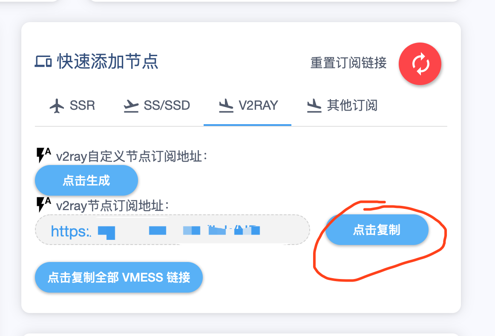
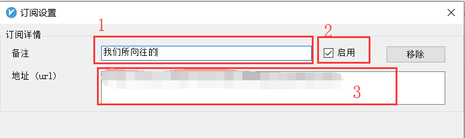
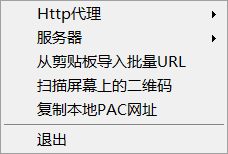

Windows PC平台
注意事项(非常重要！！！！！！)
- 检查电脑是不是已经连接到互联网
- 首先确保电脑本地时间和互联网时间误差在1分钟以内（官方标准是4分钟
这里给出Windows 10操作系统校准时间的小技巧，其他系统类似
首先连接到互联网
点击桌面右下角的时间，再点击【日期和时间设置】，打开时间设置对话框
如果自动设置时间处于关闭状态，打开它；如果自动设置时间处于打开状态，关闭它再打开它，稍等一会即可
- DNS改为114.114.114.114 / 8.8.8.8
Windows 平台（V2rayN-支持V2RAY 和 Shadowsocks）
- 注意 Windows平台可能需要安装一个.Net4.6 Framework的东西，一般按照提示自动安装即可，win8以上自带，如果万一真的自动安装失败了，来这个地方下载 https://docs.microsoft.com/zh-cn/dotnet/framework/install/guide-for-developers
- 下载完成之后安装即可
windows 平台客户端推荐V2rayN, 下载地址为：https://github.com/2dust/v2rayN/releases
下载名为v2rayN-Core.zip的文件，下载完毕后解压，得到运行程序

需要注意的是，请尽可能不要下载到中文目录下
- 双击
v2rayN.exe打开主界面，长这样- 【1】：服务器管理菜单，可以进行添加/删除服务器，移动服务器顺序，管理当前使用的服务器，测速，测试延迟等等
- 【2】：更新机场订阅的地方
- 【3】：高级参数设置
- 【4】：显示服务器信息的地方
- 【5】：分享服务器配置的地方，我们禁止分享账号！！！！！感谢理解，但是可以多终端使用，比如手机电脑之类的可以一起用
- 【6】：显示当前连接信息的地方

添加订阅
- 登录机场后台，找到【用户中心】-【快速添加节点】，详细步骤在这里https://gmail.gitbook.io/wmsxwd/ji-ben-pian/windows-ke-duan-pei-zhi#ruan-jian-pei-zhi
- 注意，这里不要去管shadowsocks之类的，请点击后面的V2ray，如下图
****

- 点击复制自己的订阅地址
打开
V2rayN软件，在主界面依次点击【订阅】--【订阅设置】，打开订阅设置界面，如下图依次填入【备注】，【启用勾选】，地址填写上一步复制的，【自己的订阅地址】，然后点击最下面的【确定】按钮

- 更新订阅，一般来说以上操作完成后，等一分钟左右订阅会自己更新，如果没有更新，执行下面的步骤
- 打开
V2RAYN软件的主界面，依次选择【订阅】--【更新】，等待一分钟左右会更新订阅，以后的订阅手动更新也是执行此操作
- 打开
- 激活节点：订阅更新完成后【4】：显示服务器信息的地方，会出现我们分配给你的节点，节点有很多，所以下面你需要选择一个节点进行激活，来启用这个节点
- 在节点列表中选择一个节点，然后按一下回车，【Enter】键，这个节点就激活了
- 移动用户：建议激活香港相关节点
- 联通用户：随意
- 电信用户：60级以上用户建议使用中转线路或者GIA节点，50级以上用户建议使用GIA节点
- 长城宽带用户：网络太过复杂，出口不定，不保证可用率，可以多测试几个节点
选择上网策略：到上一步，用户已经激活了节点，下面需要选择一个上网策略，决定在什么情况下流量从这个节点通过
v2rayN软件启动后右下角任务栏会出现一个圆形的
V图标,表示软件已经在运行了，这个图标长这样颜色不重要，认准这个V 图标就好，如果没有，可以去你的任务栏看看是不是被折叠了
在这个图标上点击右键，查看一下操作菜单：

- 在
V2RAY图标上依次点击【右键】--【开启PAC，并自动配置PAC】，即可上网 - The End， Enjoy It